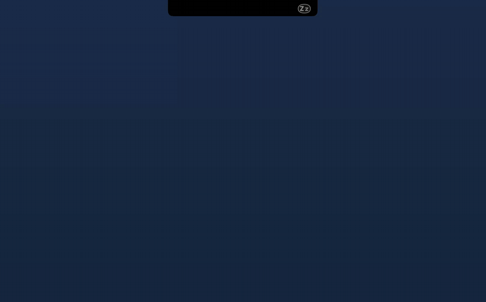

Um robozinho no notch que avisa quando o Claude Code precisa de você
Você deixa o Claude Code trabalhando, vai fazer outra coisa e esquece de voltar. O Psiu acompanha cada sessão pelo notch e chama você, com cor e som, assim que uma termina ou pede permissão.
Gratuito e de código aberto · macOS 14 ou mais novo · Sem conta, sem internet


“Psiu!” é como a gente chama alguém
Aquele som curto para chamar a atenção. É todo o trabalho dele: um robô que fica quieto enquanto está tudo bem e chama você quando não está.
Uma olhada e você sabe tudo
A cor e os olhos do robô mudam com as suas sessões. Com várias abertas, ele mostra sempre a mais urgente.

Trabalhando
Olhos varrendo enquanto o Claude trabalha.
Segundo plano
O turno acabou, mas ainda há shells, monitores ou subagentes rodando. Nada de “terminou” falso.
Precisa de você
Olhos e um “!” se alternam, com som na hora e lembrete a cada 2 minutos.
Terminou
Um pulinho feliz e um som. Mais um lembrete se você não olhou.
Parado
Olhos semicerrados: terminou, e você já viu.
Dormindo
Olhos em “Z z” quando não há sessão aberta.

Dois pontinhos para o que o robô não consegue mostrar
- Ponto verde: outra sessão terminou enquanto o robô mostra algo mais urgente.
- Ponto vermelho: uma sessão passou de 80% do contexto e está perto de ser compactada. O robô fica com cara de cansado.

Clique no notch. Ele se estica e vira um painel.
Nada de balão: o próprio notch cresce para baixo, em preto sólido, e se recolhe quando você clica em qualquer outro lugar.
- Limites do plano que olham para a frente. A janela de 5 horas e a semana, e, pelo ritmo da última hora, se o consumo estoura antes de renovar.
- O que cada sessão fez. Uma linha com o resumo do que terminou ou do que está pedindo, e o uso de contexto.
- Um clique até o terminal certo. Terminal e iTerm vão direto na aba; VS Code, Cursor e outros vêm para a frente.
- Um espelho honesto. Quanto os agentes trabalharam hoje, quanto esperaram por você e sua resposta média.
Funciona também no monitor externo
Em telas sem notch, o Psiu desenha um do mesmo tamanho no topo. Mostre em uma tela ou em todas.
Instale em um minuto
Baixe
Pegue o Psiu.dmg na última versão.
Arraste
Abra e arraste o Psiu para Aplicativos.
Autorize
Na primeira abertura, o macOS bloqueia apps sem assinatura. Vá em Ajustes do Sistema → Privacidade e Segurança e clique em Abrir Mesmo Assim.
Ligue
O Psiu pergunta se pode se ligar ao Claude Code. Clique em Ligar e reinicie as sessões abertas.

Requer macOS 14 Sonoma ou mais novo e o Claude Code. O uso do plano exige Claude Pro ou Max. O Psiu fala português quando o Mac está em português do Brasil e inglês nos demais idiomas.
Privado por princípio
O Psiu nunca se conecta à internet, nunca lê senha ou token e guarda tudo em ~/.psiu, no seu Mac. Usa só os hooks e a status line oficiais do Claude Code, e a única configuração que altera, o ~/.claude/settings.json, ganha um backup antes. Para desinstalar, use o menu do robô, e a sua status line anterior volta.
Dúvidas
Funciona com o app do Claude ou o claude.ai?
Ainda não. Só o Claude Code expõe o que cada sessão está fazendo. O app do Claude tem a própria notificação de resposta concluída, nas Configurações.
Por que o macOS bloqueia na primeira vez?
O Psiu é gratuito e não é notarizado pela Apple, o que exige uma conta paga de desenvolvedor. O “Abrir Mesmo Assim” em Privacidade e Segurança é feito uma vez só.
Ele deixa o Claude Code mais lento?
Não. Cada hook é uma chamada local minúscula que grava um arquivo pequeno e termina.
Posso compilar eu mesmo?
Pode. É um único arquivo Swift, sem dependências. Rode bash gerar-dmg.sh e você tem o mesmo app e o mesmo instalador.
Posso fazer um fork?
O código é MIT, então pode, inclusive para uso comercial. O nome Psiu, o robô e o ícone continuam com o autor: dê ao seu fork outro nome e outro personagem.

Feito por Jaime Brolesi
Criado com o Claude para parar de perder tempo com sessões esperando em segundo plano. Se o Psiu te ajudar, uma estrela no GitHub ou um post sobre ele faz muita diferença.
★ Dar uma estrela no GitHub LinkedIn GitHub